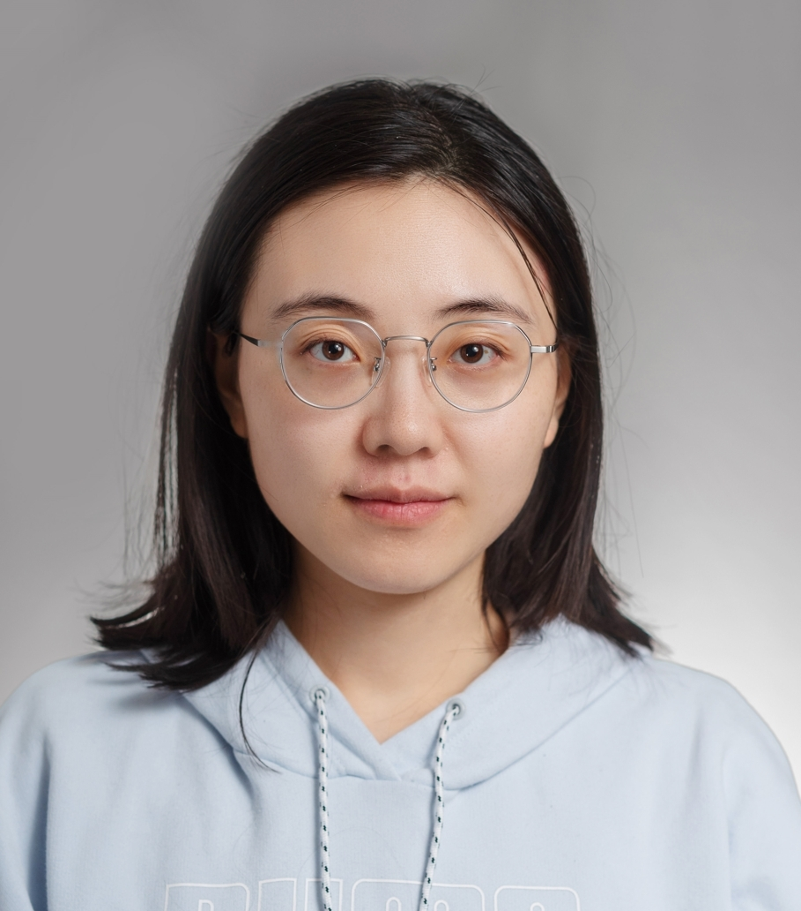
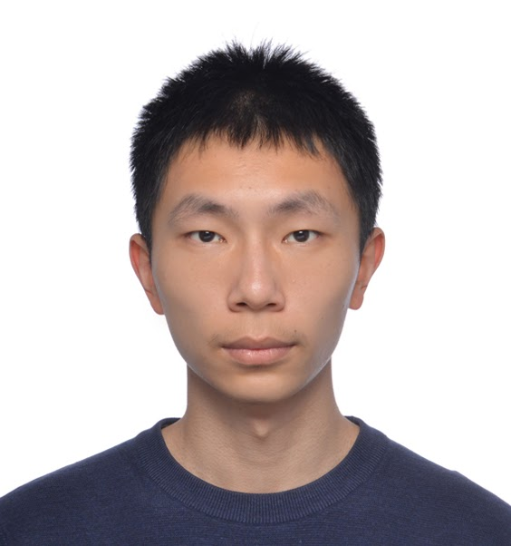
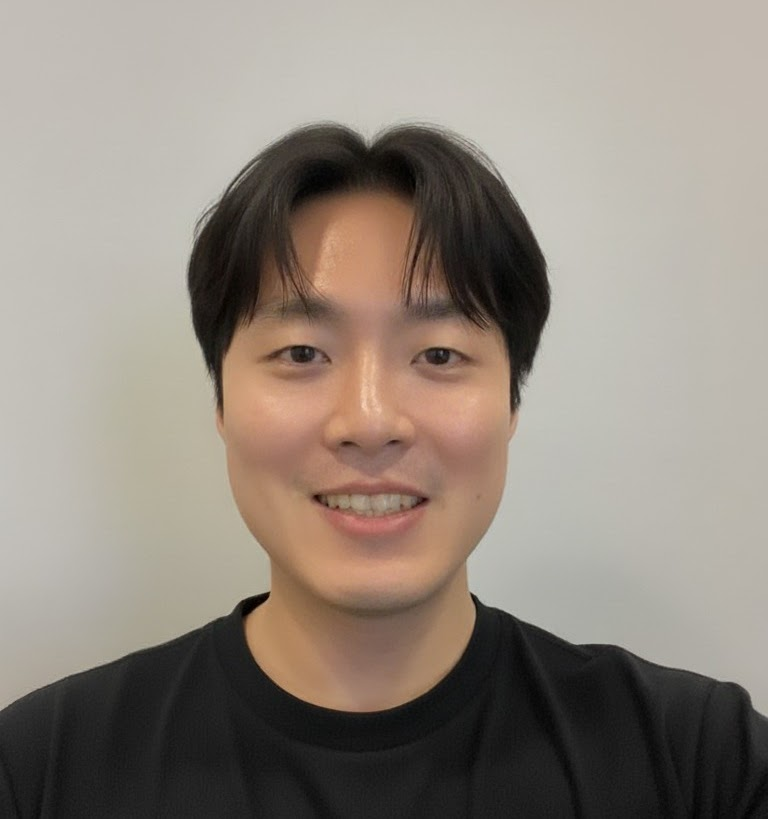

Towards Comprehensive Reasoning in Vision-Language Models
ICCV 2025 Tutorial
10/19/2025 8:30-12:00 (GMT-10, Honolulu Time Zone)
Room TBD, Hawai'i Convention Center
Introduction
Vision-Language Models (VLMs) have achieved remarkable progress in image captioning and visual question answering, yet developing genuine reasoning capabilities remains an open challenge. Unlike recent breakthroughs in reasoning-focused LLMs, many VLMs still rely primarily on pattern recognition and struggle with compositional logic. This tutorial provides a comprehensive overview of reasoning capabilities in VLMs, focusing on the transition from basic perception to complex inference. We will explore reasoning-oriented prompting and training techniques in multimodal contexts, reasoning-focused benchmarks, and architectural innovations for visual-textual fusion. Through lectures and hands-on demonstrations, participants will gain insights into current capabilities, persistent challenges in compositional generalization and explainability, and practical guidance for implementing reasoning mechanisms. This tutorial uniquely bridges advances in LLM reasoning with the visual domain, addressing the distinct challenges of spatial information processing and providing a roadmap toward more cognitively capable vision-language systems.
Vision-Language Reasoning Tutorial Schedule
| Time | Session | Speaker |
|---|---|---|
| 8:30 - 8:35 |
Opening Remark: Motivation and Overview [Abstract]
Abstract: Welcome to our comprehensive tutorial on reasoning in vision-language models. This opening session will set the stage by discussing the motivation behind developing reasoning capabilities in VLMs and provide an overview of the day's agenda, highlighting key challenges and opportunities in the field.
|
|
| 8:35 - 9:00 |
Video-TT Challenge: Towards Advanced Video Reasoning and Understanding [Abstract]
Abstract: Join us for the exciting conclusion of the Video-TT Challenge, where we will announce results and recognize outstanding achievements in video reasoning and understanding. This session will showcase innovative approaches from participating teams and highlight breakthrough methodologies that advance the state-of-the-art in video analysis and temporal reasoning. See more details at: https://sites.google.com/view/video-tt-challenge
|
Yuhao Dong, Yuanhan Zhang, Ziwei Liu, and Representative Teams |
| 9:00 - 9:35 |
Invited Talk: Reasoning in Multimodal GUI Agents: An Exploration-Driven Perspective [Abstract]
Abstract: This talk explores how multimodal GUI agents can develop sophisticated reasoning capabilities through exploration-driven learning. We will discuss novel approaches to understanding user interfaces, spatial relationships, and interaction patterns, highlighting how agents can learn to navigate complex digital environments through systematic exploration and reasoning.
|
|
| 9:35 - 10:10 |
Invited Talk: LMMs-Lab: Building Multimodal Intelligence [Abstract]
Abstract: Discover the LMMs-Lab initiative and its comprehensive approach to building multimodal intelligence systems. This presentation will cover the lab's research framework, key findings in large multimodal model development, and practical insights for creating robust vision-language systems that can handle diverse real-world scenarios.
|
|
| 10:10 - 10:45 |
Invited Talk: Mathematical Reasoning in Visual Contexts [Abstract]
Abstract: Mathematical reasoning presents unique challenges when combined with visual information. This talk will explore how vision-language models can be enhanced to solve mathematical problems that require understanding geometric relationships, interpreting charts and graphs, and reasoning about spatial configurations in mathematical contexts.
|
|
| 10:45 - 11:20 |
Invited Talk: Chain-of-Look Visual Reasoning [Abstract]
Abstract: Session details and abstract will be announced soon. Stay tuned for updates on this exciting presentation that will contribute to our comprehensive exploration of vision-language reasoning capabilities.
|
|
| 11:20 - 11:55 |
Invited Talk: Grounding Anything in Images and Videos for Comprehensive Reasoning[Abstract]
Abstract: Session details and abstract will be announced soon. This presentation will complement our tutorial series with additional insights into advanced vision-language reasoning techniques and methodologies.
|
|
| 11:55 - 12:00 |
Closing Remark [Abstract]
Abstract: Our tutorial concludes with a synthesis of key insights, future research directions, and practical takeaways. This closing session will summarize the day's discussions, highlight emerging trends in vision-language reasoning, and provide guidance for researchers and practitioners looking to advance this exciting field.
|
Organizers

Yujun Cai
Lecturer at University of Queensland
Dr. Yujun Cai has published over 50 papers in top-tier conferences and journals, and her research has been recognized with several prestigious awards. Currently, she leads the Visual Intelligence Lab at the University of Queensland, where his team explores cutting-edge approaches to visual reasoning, scene understanding, and embodied AI.
Jun Liu
Professor at Lancaster University
Dr. Jun Liu is Professor and Chair in Digital Health at the School of Computing and Communications, Lancaster University. He earned his PhD from Nanyang Technological University in 2019, subsequently serving as faculty at Singapore University of Technology and Design from 2019 to 2024. Prior to his academic career, he worked at Tencent from 2014 to 2015.

Yiwei Wang
Assistant Professor at University of California, Merced
Dr. Yiwei Wang was an Applied Scientist in Amazon (Seattle) in 2023 and a Postdoc in UCLA NLP Group in 2024. He obtained his Ph.D. degree from National University of Singapore in 2023. Currently, he leads the UC Merced NLP Lab, where his team explores cutting-edge approaches to diffusion llms, reasoning multi-modal llms, and their applications in medicine, advertising, risk detection, signal processing, etc.
Invited Speakers

Kai-Wei Chang
Associate Professor at University of California, Los Angeles
Dr. Kai-Wei Chang is an Associate Professor at UCLA specializing in natural language processing, machine learning, and multimodal reasoning. His research particularly focuses on mathematical reasoning, structured prediction, and developing robust AI systems that can handle complex reasoning tasks.

Junsong Yuan
Professor at University at Buffalo, SUNY
Dr. Junsong Yuan is a Professor at University at Buffalo, specializing in computer vision, pattern recognition, and multimedia analysis. His research encompasses video understanding, human activity recognition, and multimodal learning with applications in surveillance, healthcare, and autonomous systems.

Ziwei Liu
Associate Professor at Nanyang Technological University
Dr. Ziwei Liu is an Assocaite Professor at NTU and leads the LMMs-Lab initiative. His research focuses on large multimodal models, computer vision, and machine learning. He has made significant contributions to visual understanding, generative models, and multimodal intelligence systems.
Chi Zhang
Assistant Professor at Westlake University
Dr. Chi Zhang is an Assistant Professor at Westlake University, focusing on multimodal AI and embodied intelligence. His research spans GUI automation, visual reasoning, and human-computer interaction, with particular expertise in developing intelligent agents that can understand and interact with digital interfaces.


Yuanhan Zhang
Ph.D. Student at Nanyang Technological University
Yuanhan Zhang's research interests lie in computer vision and deep learning. I focus on adapting foundation models—from vision to multimodal—for real-world use: benchmarking model performance and adapting models via parameter-efficient tuning, in-context learning, and instruction tuning.